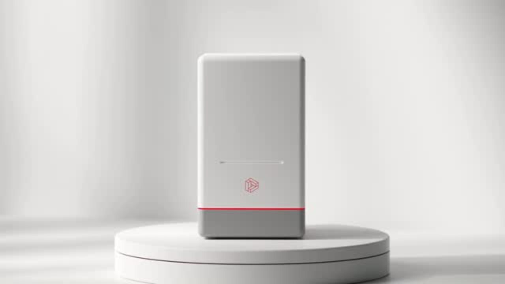
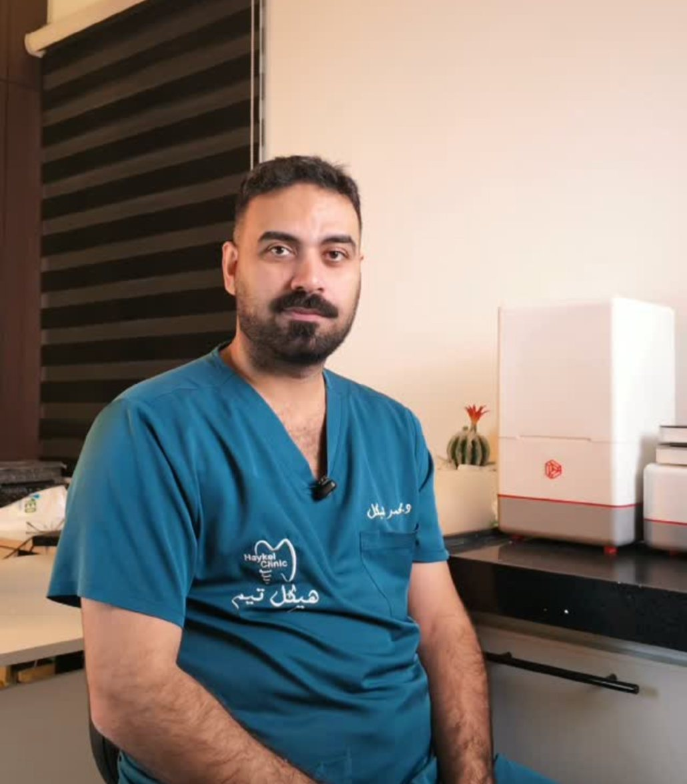
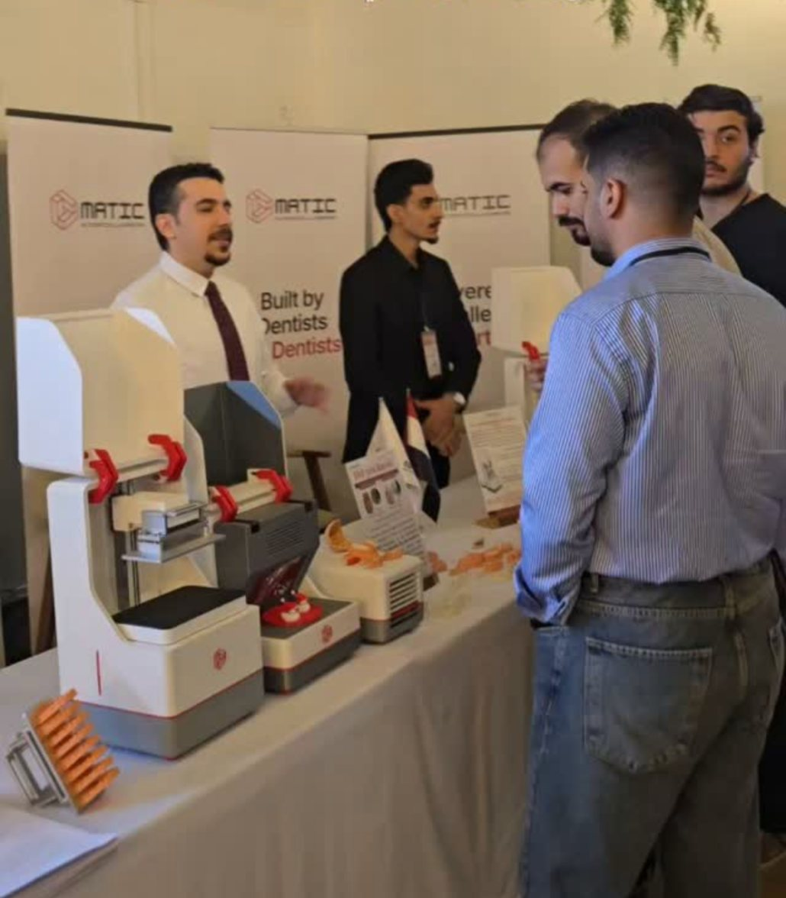
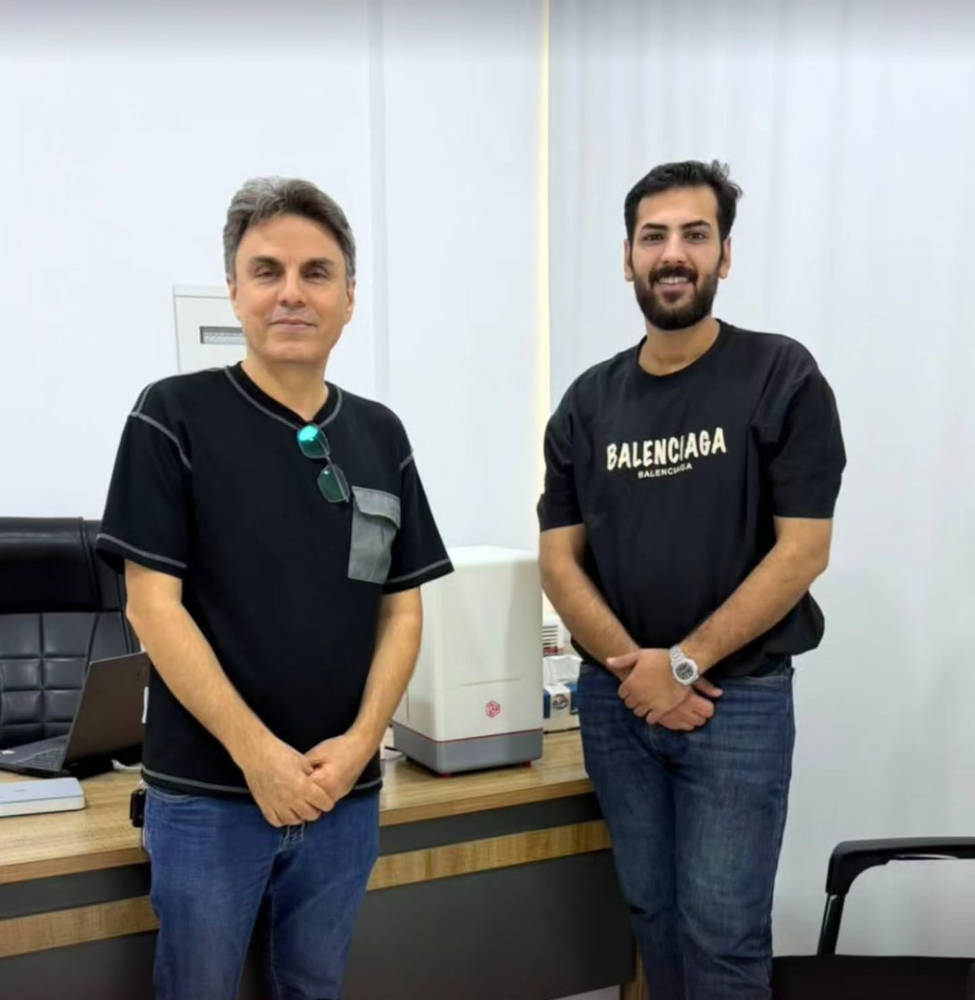
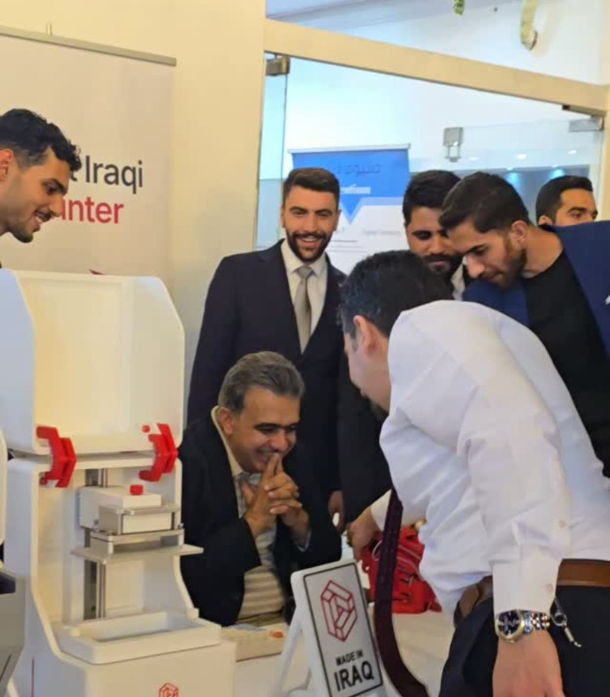
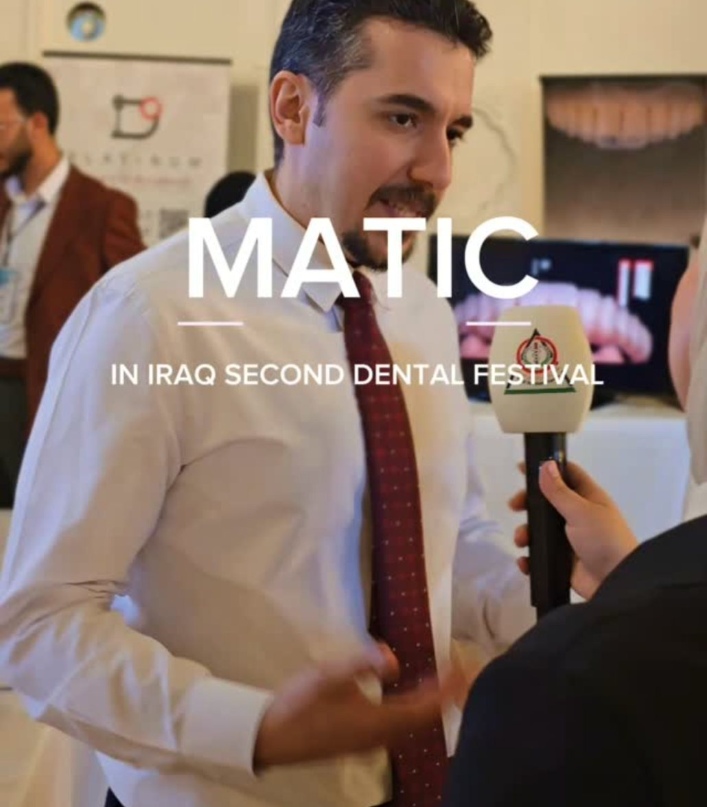

A. Chairside speed
A permanent crown printed in 18 minutes, so the patient can leave with the final restoration the same visit.
Built by dentists, for dentists. Chairside resin printing designed, built and supported in Iraq.
Scroll ↓From design file to a finished permanent crown, printed chairside.
Clinics in Iraq depend on outside labs and imported machines. Restorations take days, parts take weeks, and support sits in another time zone.
MATIC moves production into the clinic: one compact printer, local resin workflows, and an engineering team a phone call away.
A permanent crown printed in 18 minutes, so the patient can leave with the final restoration the same visit.
Setup, training, spare parts and service handled in Iraq by the team that built the machine. No overseas tickets.
Sized for a clinic counter, not a lab floor. Fits next to the scanner and works on standard power.
Over two years of research and development in Iraq, from the mechanics to the print workflow.
One printer, many indications. Detailed specification sheet available on request.

FlagshipA chairside resin printer engineered in Iraq for crowns, models, guides and appliances.
Final single-unit restorations, chairside in about 18 minutes.
Provisionals printed while the patient is still in the chair.
Partial indirect restorations printed in the clinic.
Accurate arches for diagnosis, case presentation and lab work.
Implant guides from the clinic's own planning files.
Occlusal appliances printed in-house instead of outsourced.
Models for thermoformed retainers and clear aligner workflows.
Tell us what your clinic prints and we will set up the protocol.
Lab turnaround varies by clinic and city. MATIC figure from MATIC's published chairside demonstration.
Modern dentistry is moving to digital, same-day care. Clinics that print in-house control their own schedule, materials and cost.
With a local manufacturer, downtime is measured in hours, not shipping weeks.
Intraoral scan in the chair.
Design the restoration in your CAD software.
Send the file to MATIC-01. Crown ready in ~18 minutes.
Wash, cure, polish and seat the same visit.
Years of R&D in Iraq
Minutes per permanent crown
Printers in Iraqi clinics & centers
Iraqi-made 3D printer
Scroll to run a print. The build platform lifts out of the resin as each layer cures under the light engine.





MATIC introduced as the first Iraqi-made dental 3D printer.
Step-by-step permanent crown printed in 18 minutes.
Digital Dentistry lecture for the next generation of dentists.
More than one hundred MATIC printers running in clinics and centers across Iraq.
Exhibited at regional dental and technology shows.
Booth and demos at the Iraqi Dental Syndicate headquarters.
“What we make with our own hands, we trust more.”
MATIC's goal is not just to sell printers. It is to make digital dentistry part of everyday practice in Iraq, one clinic at a time.
Try the full workflow with your own hands before you invest. Small groups, real prints, run by the MATIC team.
Register for a workshop ↗Introductory Digital Dentistry lectures, including at Al-Mashreq University, plus live talks at the Iraq Dental Festival.
Next generation of dentistsA tool for researcher dentists on the MATIC platform: find the right scientific journal for your paper by field, need and budget.
For researcher dentistsWhat digital dentistry is, the key terms, where to start and how to make the investment pay back, in short videos.
Watch on Instagram ↗Collected from the questions we get most on Instagram and at our booth.
Pricing depends on the package: printer, training and service plan. Send a quote request and the team replies on WhatsApp with current pricing and availability.
Yes. MATIC-01 is designed and built in Iraq by the MATIC team after more than two years of R&D. Ask us for a walkthrough of how it is made.
MATIC's published chairside demo prints a permanent crown in about 18 minutes, so the patient can leave with the final restoration the same visit.
Permanent and temporary crowns, inlays and onlays, study models, surgical guides, night guards, and models for retainers and clear aligners.
The MATIC team in Iraq handles installation, training, spare parts and service. No overseas tickets and no waiting on shipping.
Join a hands-on workshop first. You will scan, design and print with the team before deciding anything.
Move the sliders to match your practice. The numbers update live.
Estimates for illustration only. Design, finishing and cementation add chair time; results vary by case and workflow.
Tell us about your clinic and we will reply on WhatsApp with pricing, a demo slot and availability.
0781 011 2266